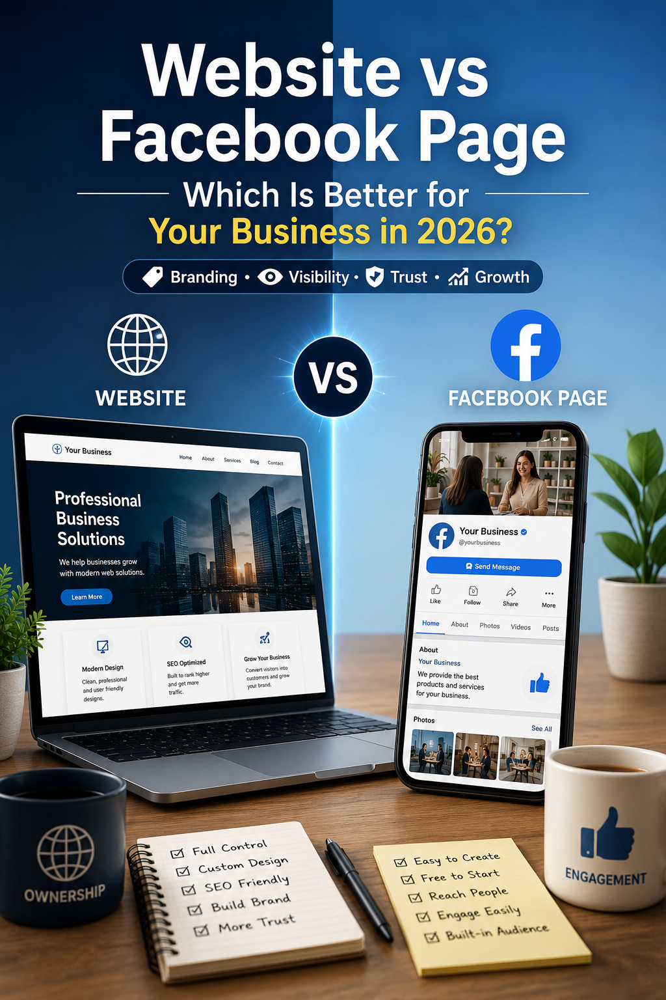
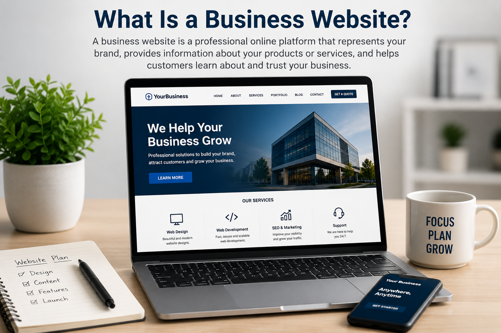
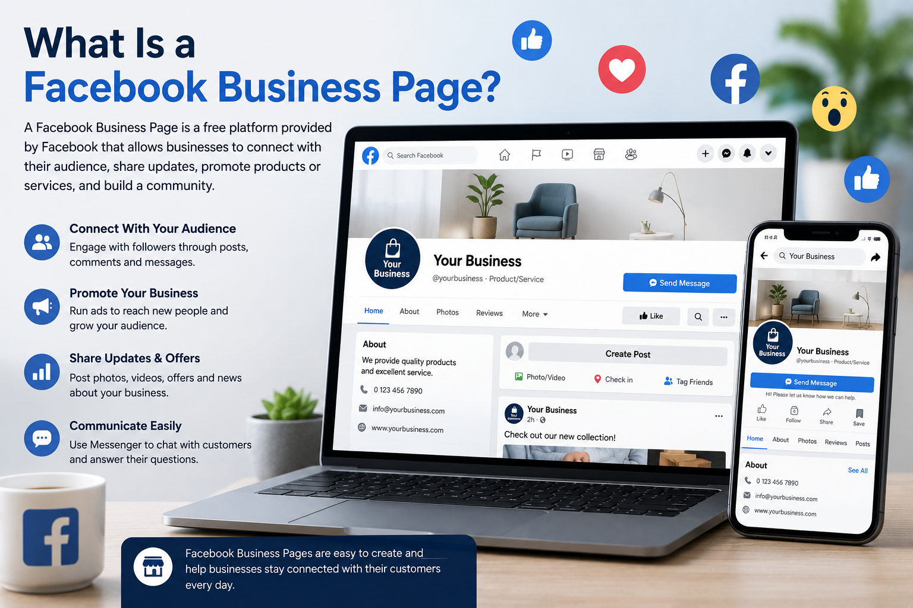
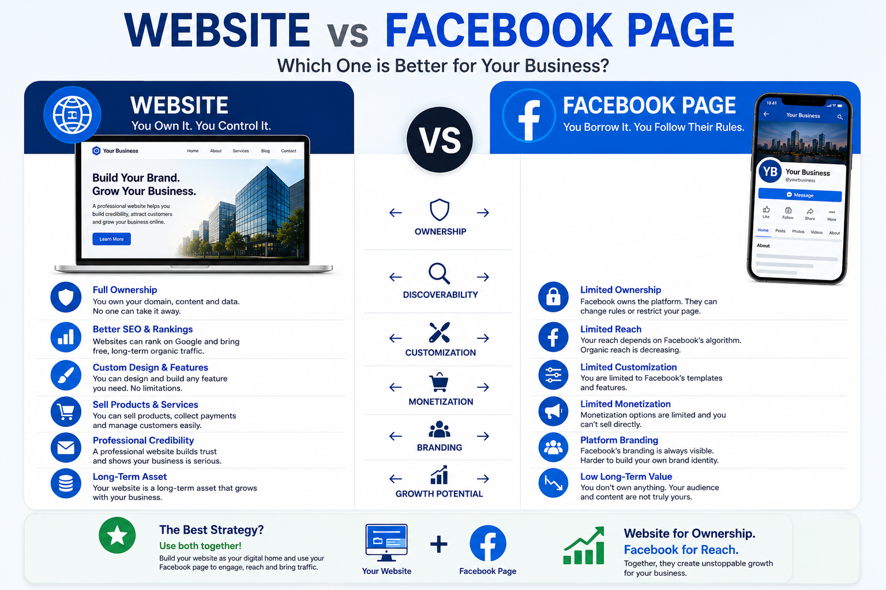
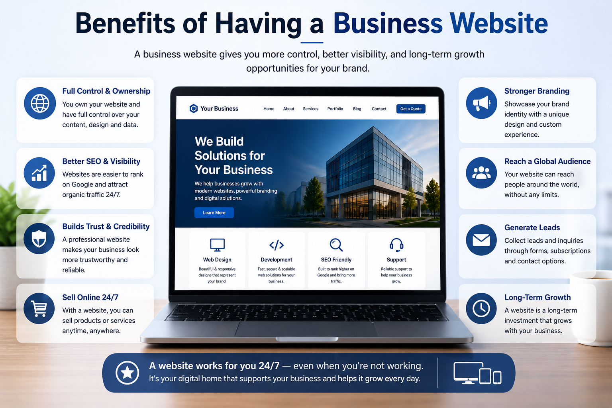
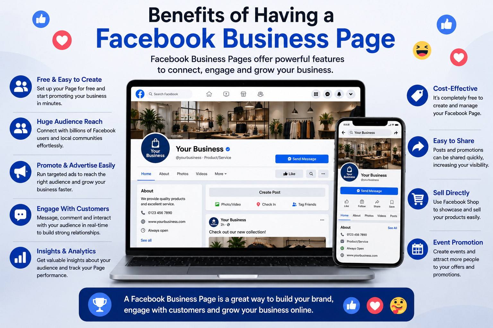
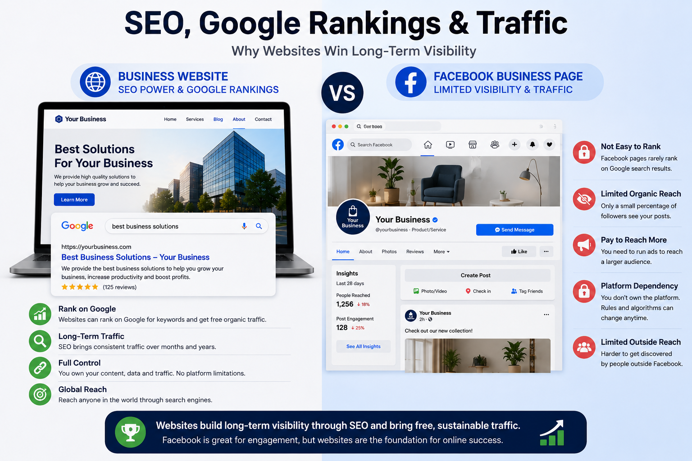
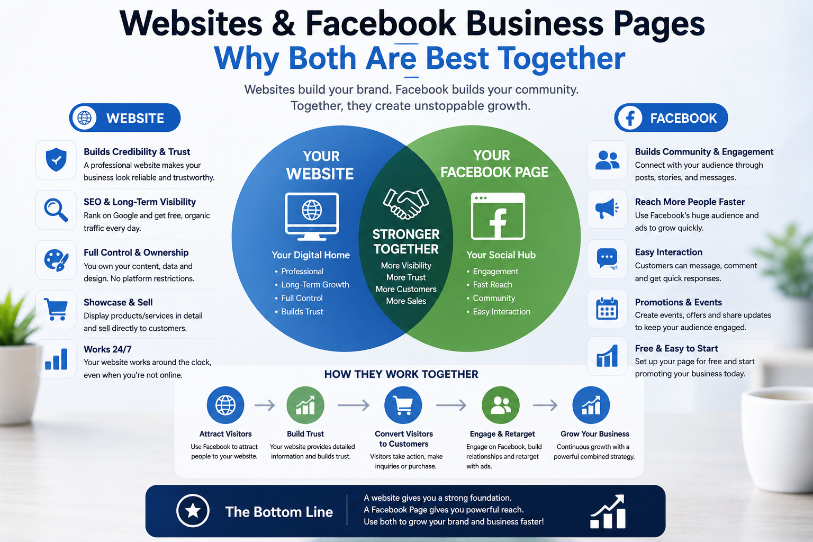
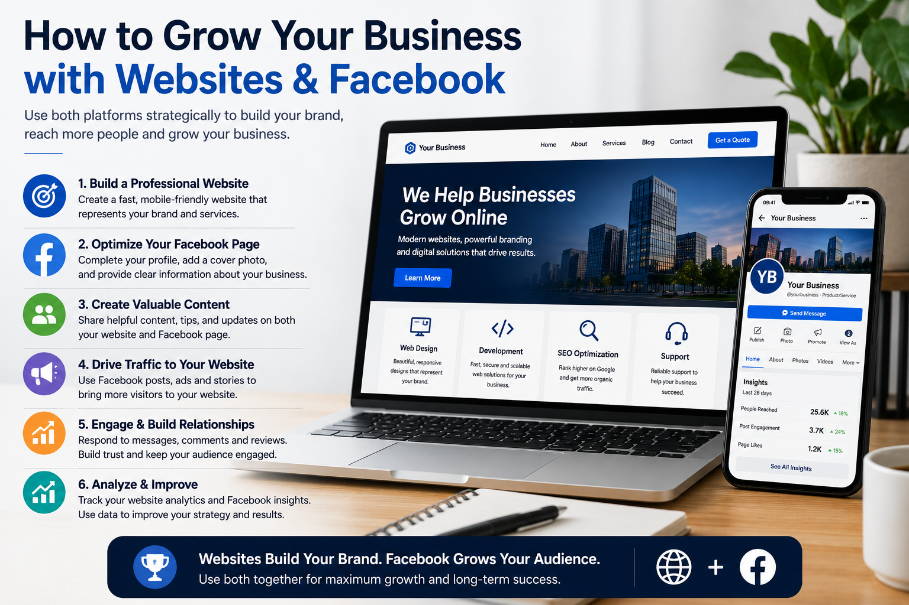
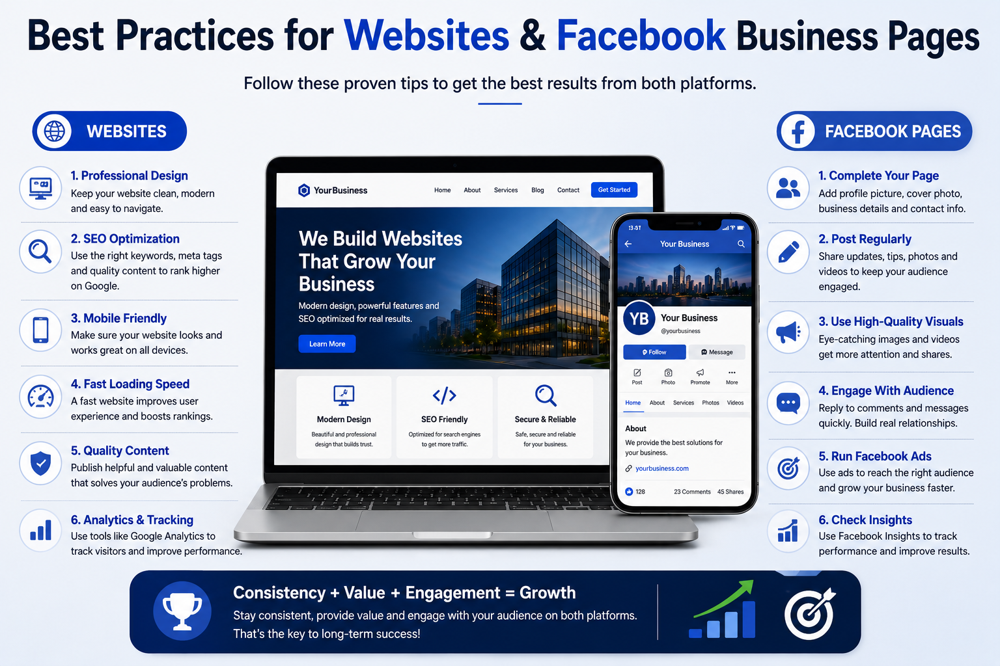

Website vs Facebook Page: Which Is Better for Your Business in 2026?

Introduction
Building a strong online presence is essential for almost every modern business. However, many business owners are unsure whether they should invest in a professional website, create a Facebook Business Page or depend entirely on social media to reach customers.
A Facebook Page is easy to create and can help a business communicate with followers, publish updates, receive messages and promote products through social content. Because many customers already use Facebook, the platform can provide a convenient way to build awareness and start conversations.
A business website serves a different purpose. It gives the business a dedicated online platform where it can control its branding, publish detailed information, appear in Google search results, collect leads, sell products and guide visitors toward specific actions.
The two options also differ in ownership and control. A website can be managed as a long-term business asset, while a Facebook Page operates inside a platform controlled by another company. Changes to algorithms, policies, account access or organic reach can affect how many people see a business Page.
The best choice depends on the type of business, available budget, marketing goals, target audience and long-term growth plans. In many cases, the strongest strategy is not choosing only one platform, but understanding how a website and Facebook Page can work together.
This guide compares business websites and Facebook Pages across ownership, cost, SEO, branding, credibility, traffic, customer engagement, analytics, lead generation and long-term growth. By the end, you will be able to decide which option is most suitable for your business in 2026.
Table of Contents
- 1. What Is a Business Website?
- 2. What Is a Facebook Business Page?
- 3. Website vs Facebook Page: Key Differences
- 4. Advantages of Having a Business Website
- 5. Advantages of Having a Facebook Page
- 6. Website vs Facebook Page for SEO, Google Rankings and Traffic
- 7. Which One Builds More Trust and Credibility?
- 8. Should Your Business Use Both?
- 9. Website vs Facebook Page Comparison and Decision Checklist
- 10. Frequently Asked Questions
- Conclusion and Final Recommendation
1. What Is a Business Website?
A business website is an online platform that represents a company, brand or organization on the internet. Unlike social media profiles, a website is fully owned and controlled by the business itself. It acts as a digital headquarters where customers can learn about products, services, pricing, company information and contact details without depending on third-party platforms.
Modern websites can do much more than simply display information. They can generate leads, process online orders, schedule appointments, collect customer inquiries, publish educational blog articles and integrate with marketing tools such as email newsletters, analytics and customer relationship management (CRM) systems.
A professional website also allows businesses to create a unique brand identity. Every element—from the layout and colors to typography, navigation and user experience—can be customized to match the company's goals. This level of flexibility is impossible to achieve on most social media platforms, where design and functionality are limited by the platform itself.

Why Businesses Need Their Own Website
Consumers often search Google before making a purchase or contacting a business. A well-optimized website allows a company to appear in search results when potential customers are looking for products or services. Unlike social media posts that disappear from feeds over time, website pages can continue attracting visitors for months or even years through search engines.
A website also creates a central destination for all marketing efforts. Whether visitors come from Google Search, Facebook, Instagram, LinkedIn, YouTube or paid advertisements, they can all be directed to a website where the business controls the customer journey and encourages actions such as requesting quotes, making purchases or contacting the company.
Think of your website as digital property that you own. Unlike social media accounts, your website remains under your control, giving you the freedom to manage content, branding, customer data and business growth without relying on changes to third-party platforms.
Key Benefits of a Business Website
- Complete ownership and full control over your online presence.
- Greater credibility and professionalism for customers.
- Opportunity to rank in Google and other search engines.
- Unlimited pages for products, services and blog content.
- Advanced analytics to understand visitor behavior.
- Lead generation through contact forms and calls to action.
- Integration with e-commerce, booking systems and payment gateways.
- Long-term digital asset that grows in value over time.
Key Takeaway
A business website is much more than an online brochure. It is a powerful digital asset that gives businesses complete ownership, improves credibility, supports search engine optimization (SEO), generates leads and creates long-term opportunities for sustainable growth.
2. What Is a Facebook Business Page?
A Facebook Business Page is a free public profile that allows businesses, organizations and brands to establish a presence on Facebook. It enables companies to share updates, promote products or services, interact with customers and build an online community using one of the world's largest social media platforms.
Unlike a personal Facebook profile, a Business Page is specifically designed for commercial use. Businesses can publish posts, upload photos and videos, respond to comments, receive customer messages, advertise through Facebook Ads and provide important information such as business hours, location, contact details and website links.
Creating a Facebook Business Page requires very little technical knowledge, making it one of the easiest ways for small businesses to start building an online presence. Many businesses use Facebook as their first marketing channel because it allows them to reach existing customers and communicate with new audiences quickly.

What Can You Do with a Facebook Business Page?
Facebook provides several built-in tools that help businesses connect with customers. Companies can publish promotional content, announce new products, organize events, answer customer questions through Messenger and encourage reviews from satisfied clients. Businesses can also create paid advertising campaigns that target specific audiences based on location, interests and demographics.
Another advantage is community engagement. Customers can like, follow, comment and share posts, helping businesses increase visibility through social interactions. Viral posts can expose a business to thousands of potential customers within a short period, especially when content is engaging and relevant.
A Facebook Business Page is excellent for building relationships and engaging with customers, but it operates within Facebook's ecosystem. The platform controls how your content is displayed, who sees it and how much organic reach your posts receive.
Limitations of a Facebook Business Page
Although Facebook Pages are useful marketing tools, they have several limitations compared to a dedicated website. Businesses have limited control over design, functionality and branding. Changes to Facebook's algorithms can significantly affect how many followers see your posts, making it difficult to rely solely on the platform for long-term growth.
Businesses also do not fully own the platform. If Facebook changes its policies, restricts an account or experiences technical issues, the business has little control over the situation. This dependency is one of the biggest reasons why many successful companies use Facebook as a marketing channel rather than as their primary online presence.
Key Benefits of a Facebook Business Page
- Free and easy to create.
- Connect directly with customers through comments and Messenger.
- Build an online community with followers.
- Share updates, promotions and announcements instantly.
- Run highly targeted Facebook advertising campaigns.
- Collect customer reviews and recommendations.
- Increase brand awareness through social sharing.
- Drive traffic to your business website or online store.
Key Takeaway
A Facebook Business Page is a powerful social marketing tool that helps businesses reach customers, build communities and promote their brand. However, because it is controlled by a third-party platform, it should generally complement a business website rather than replace it for long-term growth and online ownership.
3. Website vs Facebook Page: Key Differences
Both a business website and a Facebook Business Page can help companies build an online presence, but they serve different purposes. A website acts as a business's digital headquarters, while a Facebook Page is a social platform designed for communication and community engagement. Understanding the differences helps business owners choose the right strategy for sustainable growth.
The biggest distinction is ownership. A website belongs to the business, allowing complete control over content, branding and customer experience. A Facebook Page exists inside Facebook's platform, meaning its visibility and features are influenced by Facebook's policies, algorithms and platform updates.

Website vs Facebook Page Comparison
| Feature | Business Website | Facebook Business Page |
|---|---|---|
| Ownership | Fully owned and controlled by the business. | Controlled by Facebook's platform and policies. |
| Branding | Unlimited customization. | Limited design options. |
| SEO | Excellent Google search visibility. | Limited SEO opportunities. |
| Credibility | Highly professional appearance. | Professional but platform-dependent. |
| Content | Unlimited pages and blog articles. | Mainly posts, photos and videos. |
| Lead Generation | Advanced forms and landing pages. | Basic messaging and contact options. |
| Analytics | Detailed website analytics. | Facebook Insights only. |
| E-commerce | Full online store functionality. | Limited shopping features. |
| Long-Term Value | Builds a permanent digital asset. | Depends on Facebook's ecosystem. |
| Customer Engagement | Moderate. | Excellent through comments and Messenger. |
Which Platform Gives You More Control?
A business website gives complete control over every aspect of the user experience. Businesses can decide how pages look, what information is displayed, how visitors navigate the site and how customer data is collected. This flexibility allows companies to create unique digital experiences that support their brand identity and business goals.
In contrast, every Facebook Business Page follows the same basic layout. Although profile images, cover photos and posts can be customized, the overall appearance and functionality remain controlled by Facebook. Businesses cannot freely modify the design or introduce advanced features beyond what Facebook allows.
Think of your website as your own office building and your Facebook Page as a rented booth inside a busy shopping mall. The booth may attract many visitors, but the building owner ultimately controls the rules, layout and operating conditions.
When Is Each Platform Most Effective?
A website performs best when businesses want to rank in Google, publish valuable content, generate leads, sell products online or establish a professional online identity. It serves as the foundation for digital marketing campaigns because every advertising channel can direct customers back to the website.
A Facebook Business Page is most effective for engaging with existing customers, sharing regular updates, responding to inquiries, building a community and promoting content through organic and paid social media campaigns. It works particularly well for businesses that rely on local visibility and frequent customer interaction.
Key Takeaway
A website and a Facebook Business Page are not direct competitors—they are complementary tools with different strengths. A website provides ownership, credibility, SEO and long-term business growth, while a Facebook Business Page excels at social engagement, communication and community building. Businesses that combine both platforms usually achieve the strongest online presence.
4. Advantages of Having a Business Website
A professional business website is one of the most valuable digital assets a company can own. Unlike social media platforms, a website gives businesses complete control over their online presence, branding and customer experience. It serves as a permanent home where customers can discover products, services and company information at any time.
Whether you operate a local business, an online store or a global company, a website provides a reliable platform that supports long-term growth. As your business expands, your website can easily grow with it by adding new pages, features, products and marketing tools without the limitations imposed by third-party platforms.

Complete Ownership and Control
One of the biggest advantages of a website is ownership. Your domain name, website content and branding belong to your business. You decide how your website looks, what information is published and how visitors interact with your business without depending on changing social media algorithms or platform policies.
This level of control allows businesses to create a consistent customer experience that reflects their brand identity while maintaining complete flexibility for future improvements.
Better Search Engine Visibility
A properly optimized website can appear in Google and other search engines when potential customers search for products or services. Each page can target different keywords, helping businesses attract highly relevant organic traffic over time.
Unlike social media posts that quickly disappear from users' feeds, website pages and blog articles can continue generating visitors for months or even years through search engine optimization (SEO).
Think of your website as your digital headquarters. Every marketing channel—including Facebook, Instagram, YouTube, LinkedIn and email campaigns—can direct visitors back to your website, where you control the customer journey from start to finish.
Key Benefits of Having a Business Website
- Complete ownership of your online presence.
- Professional branding and unlimited customization.
- Higher credibility and customer trust.
- Opportunity to rank in Google Search through SEO.
- Generate leads using contact forms and landing pages.
- Sell products and services online with e-commerce features.
- Access detailed visitor analytics and performance reports.
- Integrate payment gateways, booking systems and CRM software.
- Publish unlimited blog articles and educational content.
- Create a long-term digital asset that grows with your business.
Supporting Long-Term Business Growth
As technology and customer expectations evolve, a website can be updated to meet new business requirements. Companies can improve page speed, enhance security, redesign layouts, introduce new services and expand their content without rebuilding their entire online presence.
Because a website is fully owned by the business, it remains one of the most stable and reliable foundations for digital marketing, lead generation and sustainable business growth.
Key Takeaway
A business website provides ownership, credibility, search visibility and unlimited opportunities for growth. It is the foundation of a professional online presence and remains one of the most effective long-term investments a business can make in the digital world.
5. Advantages of Having a Facebook Business Page
A Facebook Business Page is one of the easiest and most affordable ways for businesses to establish an online presence. With billions of active users worldwide, Facebook provides companies with an opportunity to connect directly with customers, build relationships and promote their products or services through social media.
Unlike a traditional website, creating a Facebook Business Page requires no coding knowledge or web hosting. Businesses can quickly publish updates, respond to customer questions and interact with followers using built-in tools that are simple to manage.

Direct Customer Communication
One of the biggest strengths of Facebook is real-time communication. Customers can send messages through Messenger, leave comments on posts, react to content and ask questions instantly. This makes it easier for businesses to provide support, answer inquiries and build stronger relationships with their audience.
Fast responses and active engagement often improve customer satisfaction and encourage repeat business. Businesses that regularly communicate with followers also create a stronger sense of trust and community.
Powerful Marketing and Advertising
Facebook offers one of the world's most advanced advertising platforms. Businesses can target audiences based on age, location, interests, behavior and many other factors. This allows companies to promote products and services to people who are most likely to become customers.
Even with a relatively small advertising budget, businesses can reach thousands of potential customers through boosted posts, sponsored content and targeted campaigns.
A Facebook Business Page is an excellent marketing channel for creating awareness, building communities and driving visitors to your website, where customers can learn more or complete purchases.
Key Benefits of a Facebook Business Page
- Free to create and easy to manage.
- Reach millions of potential customers worldwide.
- Communicate instantly through Messenger and comments.
- Build loyal communities with followers and regular engagement.
- Share photos, videos, promotions and live broadcasts.
- Collect customer reviews and recommendations.
- Run highly targeted advertising campaigns.
- Increase brand awareness through social sharing.
- Drive traffic to your business website or online store.
- Access performance data using Facebook Insights.
Understanding the Limitations
Although Facebook offers many advantages, businesses should remember that they do not own the platform. Facebook controls the algorithms, features and policies that determine how content is displayed. Changes to organic reach or account restrictions can significantly affect business visibility.
For this reason, many successful businesses use Facebook as a marketing tool rather than their primary online presence. Combining a Facebook Business Page with a professional website provides greater stability, ownership and long-term growth opportunities.
Key Takeaway
A Facebook Business Page is an excellent platform for customer engagement, social marketing and brand awareness. Its ability to connect businesses with large audiences makes it a valuable digital marketing tool. However, because businesses do not fully control the platform, it works best when used alongside a professional website instead of replacing one.
6. Website vs Facebook Page for SEO, Google Rankings and Traffic
Search engine optimization (SEO) is one of the biggest differences between a business website and a Facebook Business Page. While both can appear in Google search results, a professional website provides far greater opportunities to rank for relevant keywords, attract organic traffic and generate long-term business growth.
A Facebook Page is primarily designed for social networking rather than search engine optimization. Although public Facebook Pages can be indexed by Google, businesses have limited control over technical SEO, page structure, metadata and content optimization. In contrast, a website allows complete optimization of every page to improve search visibility.

Why Websites Perform Better in Google Search
Search engines evaluate hundreds of ranking factors when deciding which pages appear in search results. A business website gives owners full control over these factors, including page titles, meta descriptions, URLs, internal linking, page speed, mobile optimization, structured data and high-quality content.
Businesses can also publish detailed blog articles that answer customer questions and target specific search terms. Over time, these pages build authority and continue attracting visitors long after they are published, creating a reliable source of organic traffic.
How Facebook Helps Generate Traffic
Although Facebook is not an SEO platform, it plays an important role in content distribution. Businesses can share blog articles, product pages, promotions and company updates with followers, encouraging users to visit their websites. Well-performing posts can also be shared by other users, increasing brand awareness and referral traffic.
Facebook advertising provides another advantage by allowing businesses to reach highly targeted audiences based on demographics, interests and online behavior. These campaigns often direct visitors to landing pages or product pages hosted on the company's website.
| SEO Factor | Business Website | Facebook Business Page |
|---|---|---|
| Google Rankings | Excellent potential with proper SEO. | Limited visibility. |
| Keyword Optimization | Full control. | Very limited. |
| Meta Titles & Descriptions | Fully customizable. | Not customizable for individual posts. |
| Blog Content | Unlimited articles. | Post-based content only. |
| Structured Data | Supported. | Not available. |
| Organic Traffic | Long-term and sustainable. | Mainly depends on social engagement. |
| Evergreen Content | Yes. | Posts lose visibility over time. |
The most successful businesses use Facebook to attract attention and engage customers, while using their website to convert visitors into leads, customers or subscribers. Facebook generates social traffic, whereas a website builds lasting search engine visibility.
The Best SEO Strategy for 2026
Instead of choosing between a website and a Facebook Page, businesses should combine both platforms. A professional website should serve as the primary source of information, lead generation and search engine traffic, while Facebook should be used to promote content, communicate with customers and increase brand awareness.
Every blog article, product page or service page published on your website can be shared across Facebook to reach more people. This approach combines the long-term value of SEO with the immediate reach of social media marketing.
Key Takeaway
For SEO and long-term organic traffic, a business website is the clear winner. It provides complete optimization, stronger Google rankings and lasting visibility in search engines. A Facebook Business Page remains an excellent marketing channel, but it delivers the best results when used to support and drive traffic to a professional website rather than replace it.
7. Which One Builds More Trust and Credibility?
Trust is one of the most important factors influencing a customer's decision to contact a business or make a purchase. Even if a company offers excellent products or services, potential customers may hesitate if they cannot verify the business or find reliable information online. Both a business website and a Facebook Business Page can help establish credibility, but they do so in different ways.
A professional website often creates a stronger first impression because it reflects a company's commitment to its brand and customers. Visitors expect legitimate businesses to have an official website where they can learn about the company, explore products or services and find accurate contact information.

Why a Website Builds More Professional Credibility
A business website provides complete control over branding, design, content and customer experience. Companies can display their mission, team members, certifications, client testimonials, case studies, privacy policies and terms of service in a professional manner. These elements help visitors feel more confident when deciding whether to do business with the company.
A custom domain name such as yourbusiness.com also appears more professional than relying solely on a social media profile. Customers often associate a dedicated website with stability, reliability and long-term commitment.
How Facebook Helps Build Social Proof
Although a Facebook Business Page offers less control over branding, it provides valuable social proof. Customer reviews, recommendations, comments, reactions and shares allow potential customers to see how others interact with the business. Positive engagement can strengthen trust and encourage new customers to make contact.
Facebook Messenger also enables businesses to respond quickly to questions, creating a sense of accessibility and responsiveness that many customers appreciate.
| Trust Factor | Business Website | Facebook Business Page |
|---|---|---|
| Professional Appearance | Excellent | Good |
| Brand Identity | Fully customizable | Limited customization |
| Customer Reviews | Can display testimonials | Built-in reviews and recommendations |
| Company Information | Unlimited pages and details | Basic business information |
| Customer Interaction | Contact forms and live chat | Comments and Messenger |
| Ownership | Fully controlled by the business | Controlled by Facebook |
Today's customers often research a business before making a purchase. Finding both a professional website and an active Facebook Business Page creates a stronger impression than finding only one platform. Together, they demonstrate that the business is established, active and committed to serving its customers.
The Importance of Consistency
Regardless of which platform you use, maintaining consistent branding is essential. Your business name, logo, contact information, colors and messaging should match across your website, Facebook Page and other marketing channels. Consistency helps customers recognize your brand and reinforces trust every time they interact with your business.
Regularly updating both platforms with accurate information, recent content and customer support also shows that the business is active and reliable. Outdated pages or incorrect contact details can quickly reduce customer confidence.
Key Takeaway
A professional website generally builds stronger long-term credibility because it demonstrates ownership, professionalism and brand authority. A Facebook Business Page complements this by providing social proof, customer engagement and public interaction. Businesses that maintain both platforms consistently are more likely to earn customer trust and stand out from competitors.
8. Should Your Business Use Both? (Best Strategy for 2026)
After comparing the strengths and limitations of both platforms, the question is no longer whether a business should choose a website or a Facebook Business Page. Instead, the better question is how these two platforms can work together to achieve the best results.
In 2026, successful businesses rarely rely on a single online platform. Instead, they combine a professional website with an active Facebook Business Page to maximize visibility, customer engagement and long-term growth. Each platform plays a different role in the customer journey, creating a stronger and more effective digital marketing strategy.

Use Your Website as the Business Hub
Your website should serve as the central hub of your online presence. Every important business activity—including product information, services, pricing, online sales, appointment booking, customer support, blog articles and contact forms—should be available on your website. Because you fully control the platform, it becomes your most valuable long-term digital asset.
Publishing high-quality content on your website also helps improve SEO, increase Google rankings and generate organic traffic that continues to grow over time.
Use Facebook to Build Relationships
Your Facebook Business Page should focus on communication and community building. Share company news, promotions, behind-the-scenes content, customer success stories, educational tips and blog articles from your website. Encourage discussions, answer questions through Messenger and respond to comments promptly to strengthen customer relationships.
Instead of treating Facebook as your main business platform, use it to guide people toward your website where they can explore your products, learn more about your business and complete purchases or inquiries.
| Platform | Primary Purpose |
|---|---|
| Business Website | SEO, lead generation, online sales, business information, blogs and long-term growth. |
| Facebook Business Page | Community engagement, customer support, promotions, advertising and social interaction. |
Every social media post should encourage visitors to learn more on your website. Likewise, every page on your website should make it easy for customers to connect with your business through Facebook and other social platforms. This creates a seamless customer experience across all digital channels.
A Simple Digital Marketing Workflow
- Publish valuable articles, products or service pages on your website.
- Share that content on your Facebook Business Page with engaging captions and visuals.
- Respond quickly to comments and Messenger inquiries.
- Direct interested users back to your website for detailed information, quotes or purchases.
- Use website analytics and Facebook Insights to measure performance and improve future marketing campaigns.
Why This Strategy Works
Combining a website with a Facebook Business Page allows businesses to benefit from both search engines and social media. The website builds authority, credibility and long-term organic traffic, while Facebook helps expand brand awareness, strengthen customer relationships and generate immediate engagement.
This balanced approach reduces dependence on any single platform and creates a more stable online presence that can adapt as technology, customer behavior and digital marketing trends continue to evolve.
Key Takeaway
The best strategy for 2026 is not choosing between a website and a Facebook Business Page—it is using both together. Let your website be the foundation of your business, while Facebook supports it by building relationships, promoting content and driving qualified visitors back to your website. This combination provides stronger credibility, better marketing performance and greater long-term business success.
9. Website vs Facebook Page Comparison and Decision Checklist
Choosing between a business website and a Facebook Business Page depends on your goals, budget and long-term vision. While both platforms can help you establish an online presence, they are designed for different purposes. The comparison below summarizes the most important differences to help you make an informed decision.

Complete Comparison Table
| Feature | Business Website | Facebook Business Page |
|---|---|---|
| Ownership | Fully owned by your business. | Operates under Facebook's platform. |
| Branding | Unlimited customization. | Limited layout and design options. |
| Google SEO | Excellent. | Limited. |
| Organic Traffic | Long-term and sustainable. | Mainly social traffic. |
| Professional Image | Very high. | Moderate to high. |
| Customer Engagement | Good. | Excellent. |
| Advertising | Supports multiple advertising platforms. | Integrated Facebook Ads. |
| Lead Generation | Advanced forms and landing pages. | Messenger and contact buttons. |
| E-commerce | Full online store support. | Limited shopping features. |
| Analytics | Detailed website analytics. | Facebook Insights. |
| Long-Term Growth | Excellent. | Depends on Facebook policies. |
| Overall Business Value | High long-term digital asset. | Excellent supporting marketing channel. |
Decision Checklist
Use the following checklist to determine which solution best fits your business needs.
- Choose a Business Website if you want to appear in Google Search, build long-term credibility, publish detailed content, sell products online and fully control your brand.
- Choose a Facebook Business Page if your main goal is to engage with customers, build an online community and promote content through social media.
- Choose Both if you want the strongest digital marketing strategy, combining search engine visibility with social media engagement.
For most businesses in 2026, the best solution is to use a professional website as your primary online platform and a Facebook Business Page as a marketing and communication channel. This combination provides better SEO, stronger credibility, greater customer engagement and long-term business growth.
Quick Decision Guide
| If You Want To... | Best Choice |
|---|---|
| Rank higher on Google | Business Website |
| Build customer trust | Business Website |
| Communicate with customers daily | Facebook Business Page |
| Run social media advertising | Facebook Business Page |
| Sell products online | Business Website |
| Generate long-term organic traffic | Business Website |
| Increase brand awareness quickly | Facebook Business Page |
| Create a complete online presence | Use Both Together |
Key Takeaway
There is no single platform that is perfect for every business. A website delivers ownership, search visibility and long-term growth, while a Facebook Business Page excels at customer interaction and social marketing. Businesses that combine both platforms create a stronger, more professional and more resilient online presence than those relying on only one.
10. Frequently Asked Questions
Below are some of the most common questions business owners ask when deciding between a professional website and a Facebook Business Page.
1. Is a website better than a Facebook Business Page?
For most businesses, yes. A website offers complete ownership, professional branding, better search engine optimization (SEO), greater customization and stronger long-term value. A Facebook Business Page is an excellent marketing tool, but it should usually complement a website rather than replace one.
2. Can a Facebook Business Page replace a website?
A Facebook Business Page can provide a basic online presence, especially for very small businesses or startups. However, it cannot fully replace a website because it offers limited control over branding, SEO, functionality and customer experience. Businesses looking for long-term growth generally benefit from having both.
3. Which option is better for Google Search?
A business website is significantly better for Google Search because it allows businesses to optimize page titles, meta descriptions, keywords, URLs, page speed, structured data and content. These factors help improve search rankings and generate sustainable organic traffic.
4. Is creating a Facebook Business Page free?
Yes. Creating and managing a Facebook Business Page is generally free. However, businesses often invest in paid advertising, boosted posts, professional content creation and marketing campaigns to increase their reach and attract more customers.
5. Which platform builds more customer trust?
A professional website usually creates stronger credibility because it shows that a business has invested in its own online presence. At the same time, an active Facebook Business Page with positive reviews, customer interactions and regular updates provides valuable social proof that further strengthens trust.
6. Which option is better for small businesses?
Small businesses benefit most from using both platforms together. A website provides a professional online foundation, while a Facebook Business Page helps businesses engage with customers, promote content and increase brand awareness through social media.
7. Do I need technical knowledge to build a website?
Not necessarily. Many modern website builders and content management systems make it possible to create professional websites without coding. Businesses that need advanced features can also work with web development professionals to build customized solutions.
8. What is the best strategy for businesses in 2026?
The most effective strategy is to use a professional website as your primary online platform while using a Facebook Business Page to build relationships, engage with customers and drive traffic back to your website. This balanced approach combines the strengths of both platforms and supports sustainable business growth.
Key Takeaway
A website and a Facebook Business Page each serve different purposes. The website acts as your business's permanent digital home, while Facebook helps expand your reach and strengthen customer engagement. Using both together creates a more effective and resilient online presence than relying on either platform alone.
Conclusion
Choosing between a business website and a Facebook Business Page is not about deciding which platform is universally better. Instead, it is about understanding how each platform contributes to your business goals.
A professional website provides complete ownership, stronger branding, better search engine visibility, greater credibility and long-term business growth. It serves as the central hub where customers can learn about your business, explore your products or services and take important actions such as making purchases or submitting enquiries.
A Facebook Business Page complements a website by helping businesses engage with customers, build communities, promote content and reach new audiences through social media. Its communication tools and advertising platform make it an effective marketing channel, but it should not be considered a replacement for a fully featured website.
Businesses that combine both platforms enjoy the greatest advantages. Their website becomes the permanent digital foundation, while Facebook helps increase visibility, strengthen customer relationships and drive traffic back to the website.
Need a Professional Website for Your Business?
Nexvora helps businesses build modern websites, improve SEO and create digital marketing strategies that support long-term online growth.
Contact NexvoraAbout the Author
Nexvora Team
Nexvora publishes practical articles about Web Design, Web Development, SEO, Artificial Intelligence and Digital Marketing. Our mission is to help businesses, entrepreneurs and professionals build stronger online presences using modern technology and proven digital strategies.
Last Updated: July 22, 2026
Share This Article
Related Articles
How to Build Your First Website
Learn the complete process of planning, designing, developing and publishing your first professional website from scratch.
Read Article →SEO Checklist for Beginners
Discover the essential SEO techniques that help websites improve search rankings, increase traffic and attract more visitors from Google.
Read Article →How to Choose the Right Web Hosting
Compare different hosting types, understand important features and choose the best hosting solution for your business website.
Read Article →Subscribe to Nexvora
Get the latest Web Design, SEO, Artificial Intelligence, Digital Marketing and Technology articles delivered to your inbox.